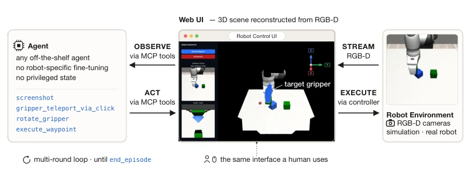
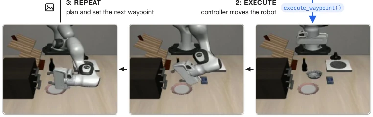
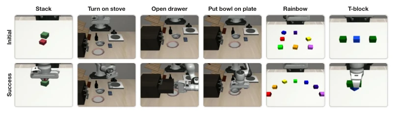

这篇论文把机器人控制玩成了“用电脑”。作者认为，既然大模型能操作软件界面，那直接让它操作机器人界面不就行了？VIA 框架确实惊艳，不用微调就能零样本搞定桌面操作，甚至 100% 完成彩虹积木任务。但别高兴太早，这玩意儿极其烧钱且慢，得靠最新最贵的模型，而且只能干慢吞吞的准静态任务，抓球？想都别想。它本质上是在验证“你的代码 Agent 其实是个隐藏的机器人 Agent”，这话听着挺性感，但实际落地成本让普通实验室望而却步。不过，它证明了通用智能迁移的潜力，省去了繁琐的数据收集，算是给机器人领域开了个“无监督”的新思路，虽然这个“无监督”是用 API 烧钱换来的。
This paper treats robot control as "using a computer". The authors argue that since large models can operate software interfaces, why not simply let them operate robot interfaces? The VIA framework is indeed impressive, achieving zero-shot desktop operation without fine-tuning, even completing the rainbow block task at 100%. However, do not get too excited too soon; this approach is extremely costly and slow, requiring the latest and most expensive models, and can only handle slow quasi-static tasks—catching a ball? Do not even think about it. It essentially validates the notion that "your code Agent is actually a hidden robot Agent"; while this sounds appealing, the actual deployment costs deter ordinary laboratories. Nevertheless, it demonstrates the potential for general intelligence transfer, eliminating tedious data collection, offering a new "unsupervised" perspective for the robotics field, although this "unsupervised" learning is purchased through API costs.
研究动机Motivation
通用机器人操作需要视觉理解、物理推理和闭环控制。现有主流方法是将基础模型微调成视觉 - 语言 - 动作（VLA）模型，但受限于机器人数据稀缺，微调后的模型往往比前沿基础模型小几个数量级，导致泛化能力受限 (Zitkovich et al., 2023; Black et al., 2025)。另一种范式是代码即策略（CaP），但这依赖人工设计的感知原语和技能库，模型能力受限于抽象层级的设计 (Fu et al., 2026)。与此同时，前沿大模型在通过视觉界面操作软件方面展现出惊人能力 (Anthropic, 2024a)。作者质疑：既然 Agent 能操作电脑，是否只需合适的界面就能控制机器人？现有方法未能充分利用大模型在视觉推理和规划上的通用能力，VIA 旨在填补这一空白，将机器人控制重构为视觉工具使用任务。
General robot manipulation requires visual understanding, physical reasoning, and closed-loop control. Existing mainstream methods fine-tune foundation models into Vision-Language-Action (VLA) models; however, constrained by the scarcity of robot data, fine-tuned models are often several orders of magnitude smaller than frontier foundation models, resulting in limited generalization capabilities (Zitkovich et al., 2023; Black et al., 2025). Another paradigm is Code-as-Policy (CaP), but this relies on human-designed perception primitives and skill libraries, where model capabilities are limited by the design of abstraction levels (Fu et al., 2026). Meanwhile, frontier large models have demonstrated remarkable capabilities in operating software through visual interfaces (Anthropic, 2024a). The authors question: since Agents can operate computers, is it sufficient to simply provide a suitable interface to control robots? Existing methods fail to fully leverage the general capabilities of large models in visual reasoning and planning. VIA aims to fill this gap by reconstructing robot control as a visual tool usage task.
方法Method
VIA 框架将机器人控制重构为基于视觉的代理观察 - 行动循环。核心是一个基于浏览器的 3D 控制界面，它利用 RGB-D 相机重建场景点云，并提供第三人称和手腕摄像头视图 (Figure 1)。代理不访问特权状态，仅通过截图观察界面。交互通过一组人类可读的 Model Context Protocol (MCP) 工具实现，包括截图、抓取器姿态设置（如 `gripper_teleport_via_click`）、相机视角调整等。代理通过工具调用设定虚拟目标抓取器作为航点，满意后调用 `execute_waypoint` 触发底层控制器移动真实机械臂。这是一个闭环过程：代理观察结果、重新规划、修正错误，直到任务完成 (Figure 2)。关键创新在于界面设计模仿 3D 设计软件，利用大模型已有的空间推理能力，且无需机器人特定微调。工具集设计遵循极简原则，仅提供底层运动控制，将感知和推理完全留给模型。
The VIA framework reconstructs robot control as a vision-based agent observation-action loop. The core is a browser-based 3D control interface that utilizes an RGB-D camera to reconstruct the scene point cloud and provides third-person and wrist camera views (Figure 1). The agent does not access privileged states, observing the interface solely through screenshots. Interaction is implemented through a set of human-readable Model Context Protocol (MCP) tools, including screenshots, gripper pose settings (e.g., `gripper_teleport_via_click`), camera view adjustments, etc. The agent sets a virtual target gripper as a waypoint via tool invocation; upon satisfaction, it calls `execute_waypoint` to trigger the underlying controller to move the real robotic arm. This is a closed-loop process: the agent observes results, replans, and corrects errors until the task is completed (Figure 2). The key innovation lies in the interface design mimicking 3D design software, leveraging the large model's existing spatial reasoning capabilities without requiring robot-specific fine-tuning. The toolset design follows a minimalist principle, providing only underlying motion control and leaving perception and reasoning entirely to the model.

Figure 1: VIA overview: an off-the-shelf agent controls a robot through a browser-based 3D inter- face. The interface includes a 3D point-cloud scene reconstructed from RGB-D cameras, as well as raw third-person and wrist camera feeds. The agent observes and acts through human-legible MCP tools: e.g., it can take screenshots and control poses by setting virtual target grippers as waypoints. Once satisfied with the target gripper pose, the agent invokes a simple controller to move the real gripper to it. The agent repeats this observe-act loop, re-planning from each new observation, and completing the task through a sequence of waypoints.

Figure 2: One round of the VIA control loop, shown on the open drawer task. Operate (top row, left to right): the agent sets the next waypoint through a few tool calls, here orienting the target gripper after viewing its rotation gizmo and then click-teleporting the gripper to the drawer handle. Every tool call returns an updated screenshot (image icons), so the agent checks the effect of each operation before issuing the next. Execute (bottom row, right to left): execute_waypoint hands the waypoint to the controller, which moves the real robot. Repeat (left arrow): the agent sees the outcome and plans the next waypoint, looping until termination. Note that the viewport has been adjusted by the agent to look towards the drawer in previous tool calls.
Evaluated on 6 desktop manipulation tasks, including stacking, opening drawers, and rainbow block assembly, among others (Figure 3). Claude Code and Codex were used as agents to test different model tiers. Results indicate that VIA can complete tasks in a zero-shot manner; CC-Fable achieved a 96.7% success rate on LIBERO-Goal tasks and 100% on the rainbow task. Performance improves with model strength; Codex is less costly but has slightly weaker capabilities. Text demonstrations (providing waypoint lists) can significantly improve the performance of weaker models. Regarding costs, a single success requires several dollars, with CC models being more expensive than Codex. Experiments demonstrate that the perception and planning capabilities of frontier Agents can be directly transferred to robot control; however, constrained by reasoning speed and cost, they are currently only applicable to quasi-static tasks.

Figure 3: The six evaluation tasks. For each task, the top panel shows an example initial state and the bottom panel shows the final state of a successful VIA rollout, both captured by a third-person camera. Object placements are randomized across seeds.